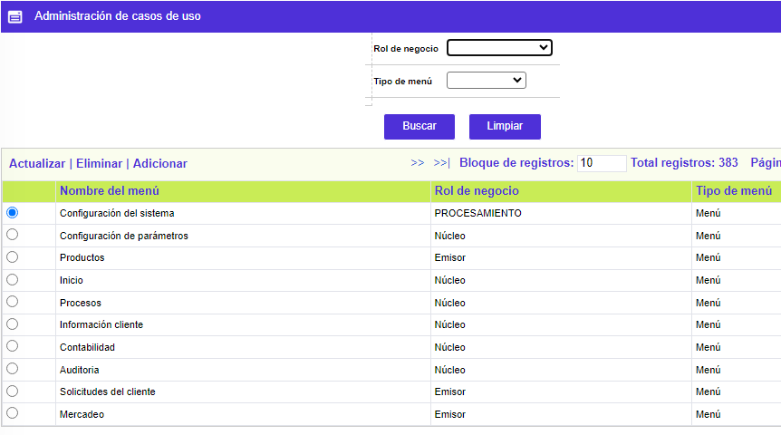
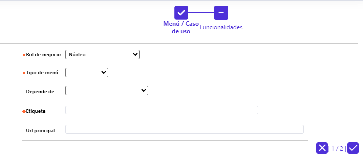
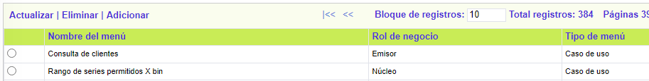
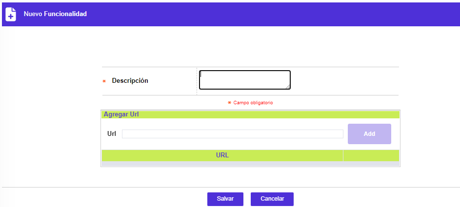
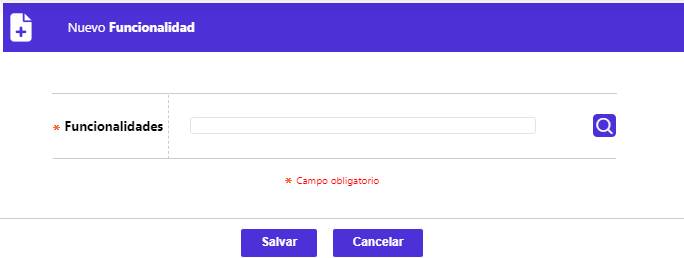
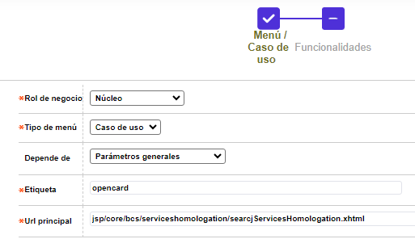

Administración de casos de uso
Desde este formulario, se habilita la consulta y mantenimiento de la tabla, en la cual se almacena la información relacionada con la manera en que se estructuran los diferentes menús de opciones o formularios e, incluso, su relación con los casos de uso -compuestos por tareas o funcionalidades-, los que pueden ser asociados con los distintos perfiles de usuario, definidos por la entidad. El formulario cuenta con un filtro que permite efectuar consultas tanto por el Rol de negocio como por el Tipo de menú. Así mismo, contiene los enlaces: Actualizar, Eliminar y Adicionar.

Adicionar: Al activar ese enlace se despliega un wisard de dos pasos: Menú / Caso de uso y Funcionalidades, con los siguientes campos.




Descipción casos de Uso
|
Rol de negocio |
Campo obligatorio que posee lista de valores tipo combo, de la que debe seleccionarse entre: Núcleo, Emisor DB, BANCO DE BOGOTA o Adquirente, a cuál de estos roles corresponde la funcionalidad que se va a adicionar. |
|
Tipo de menú |
Campo obligatorio que posee lista de valores tipo combo, de la que debe seleccionarse entre: Nulo, Menú o Caso de uso, a cuál de estos tipos corresponde la funcionalidad que se va a adicionar. |
|
Depende de |
Campo no obligatorio que posee lista de valores tipo combo cuyos valores dependen del campo Rol de negocio, de la que puede seleccionarse la correspondiente opción de menú o rama de la que depende, en este caso, la funcionalidad que se va a adicionar. |
|
Etiqueta |
En este campo alfanumérico de 60 posiciones, obligatorio, se debe registrar el nombre de la opción que corresponda a la funcionalidad que se va a adicionar. |
|
Url principal |
Campo alfanumérico de 200 posiciones, cuya obligatoriedad depende del campo Tipo de menú, en caso de requerirse debe contener la dirección inicial o principal, a partir de la cual se accesa el formulario asociado a la funcionalidad que se va a adicionar. |
|
Código funcionalidad |
Campo de salida que muestra un número secuencial, asignado por el sistema, que permite identificar cada tareal funcional que haga parte de un caso de uso. No aplica para opciones de menú Menú. |
|
Descripción |
Campo alfanumérico de 200 posiciones, obligatorio, en el que debe registrarse el nombre asociado a la tarea funcional, asociada al caso de uso. |
|
Agregar Url |
Campo en el que debe registrarse, una a una, las diferentes url o direcciones que permiten invocar los diferentes formularios o funcionalidades que componen cada tarea. |
|
Funcionalidad existente |
Campo que posee lista de valores adjunta, de la cual es posible seleccionar las tareas funcionales previamente creadas mediante esta misma opción, lo que permite reutilizar una misma tarea en varios casos de uso. |
Actualizar: Al invocar ese enlace se despliega un formulario con todos los campos modificables:
